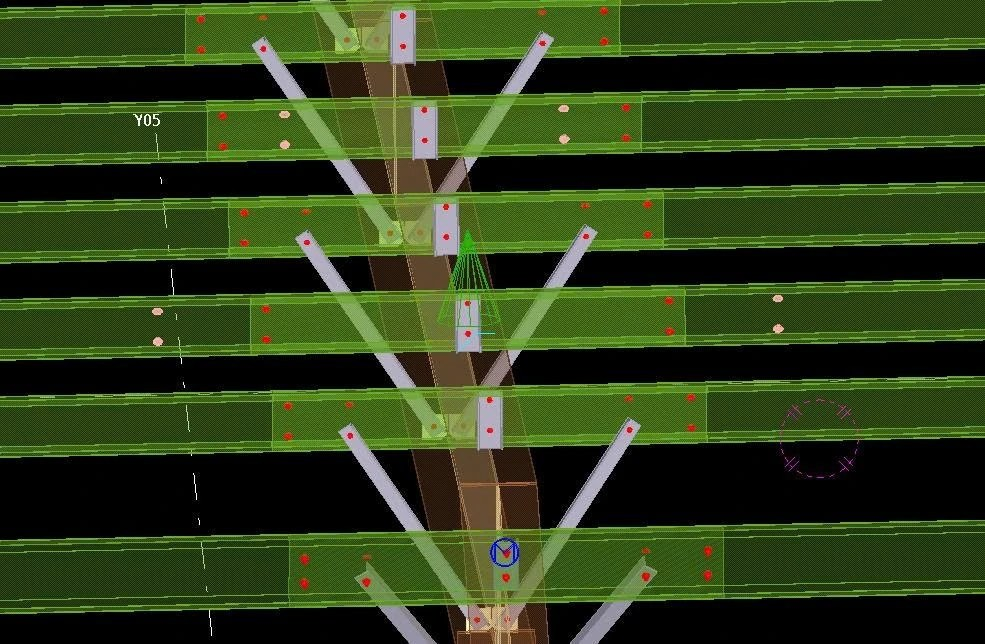
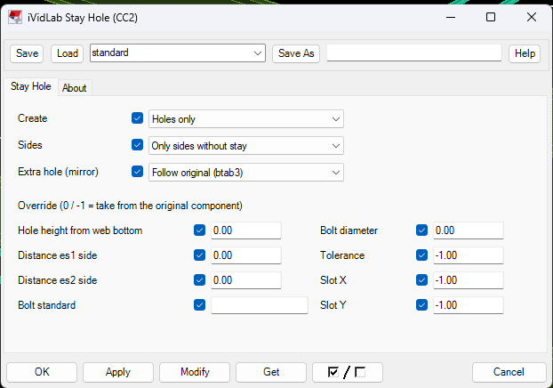

iVidLab Stay Hole (CC2) — Mọi line xà gồ giống hệt nhau, cùng một mã chi tiết
Tự tạo lỗ (và bu-lông) stay trên xà gồ ở những chỗ không có thanh chống, để các line xà gồ cùng loại giống hệt nhau và cùng một mã chi tiết.
Tóm tắt nhanh
- Quét chọn hàng loạt component Cold rolled overlap (đã thử 90 component trong một lần chạy).
- Chỉ tạo ở phía chưa có stay; chỗ đã có giữ nguyên, không tạo trùng.
- Bám theo component gốc: đổi thông số hoặc sửa kèo/xà gồ thì lỗ tự cập nhật.
- Chạy lại Numbering: các xà gồ cùng loại cùng mã chi tiết.

1. Bài toán
Với liên kết Cold rolled overlap của Tekla, lỗ bu-lông stay chỉ được tạo ở chỗ có thanh chống. Hai xà gồ cùng loại nhưng khác số lỗ thì Tekla đánh hai mã chi tiết khác nhau: xưởng phải khoan lại, bản vẽ và bảng thống kê bị lệch nhau.
2. Làm được gì
| Tính năng | Mô tả |
|---|---|
| Quét chọn hàng loạt | Chọn một hay nhiều component Cold rolled overlap một lần; chọn luôn kèo hoặc xà gồ của chúng cũng nhận |
| Tự nhận phía thiếu stay | Chỉ tạo ở phía chưa có stay, không tạo trùng chỗ đã có |
| Lấy mặc định từ component gốc | Vị trí lỗ so với tim kèo, độ cao lỗ, kiểu stay, đường kính, tiêu chuẩn, dung sai và lỗ dài của bu-lông |
| Lỗ phụ đối xứng | Theo tuỳ chọn "Stay bolt holes" của component gốc |
| Tuỳ chọn bu-lông | Chỉ lỗ, hoặc lỗ kèm bu-lông, đai ốc, long đen |
| Bám theo component gốc | Đổi thông số hay sửa kèo/xà gồ thì lỗ tự cập nhật |
| Ghi đè từng giá trị | Khi cần khác gốc, sửa ngay trong hộp thoại |
3. Cách dùng
- Chèn component iVidLab Stay Hole (CC2) từ nhóm iViDLab trong Applications & components.
- Quét chọn các component Cold rolled overlap, kết thúc bằng chuột giữa.
- Chạy lại Numbering: các xà gồ cùng loại sẽ cùng mã.

4. Lưu ý
- Bản 1.05P, thử trong Tekla Structures 2017; yêu cầu Tekla 2016 trở lên.
- Đã kiểm với kiểu stay "bottom" và các lựa chọn bản mã stay 0/1/2/3. Kiểu "centre" và các lựa chọn 4/5 chưa kiểm trên model thật.
- Mã chi tiết vẫn có thể khác nếu hình học của chính component gốc khác nhau (ví dụ cleat lệch vài mm).
5. Cài đặt
- Ở mục Tải về bên dưới, chọn phiên bản Tekla đang dùng để tải gói
.tsep. - Nhấp đúp file
.tsep, tick phiên bản Tekla rồi bấm Import. Gói được cài khi Tekla khởi động lần tiếp theo.
iVidLab Stay Hole (CC2) — Every purlin line identical, one part mark
Automatically creates stay bolt holes (and bolts) on purlins where there is no strut, so purlin lines of the same type are identical and share one part mark.
At a glance
- Pick in bulk: many Cold rolled overlap components in one run (tested with 90).
- Only creates on the side with no stay; existing stays are left alone, never duplicated.
- Follows the source component: change the settings or edit the rafter/purlin and the holes update.
- Re-run Numbering: purlins of the same type get the same part mark.
1. The problem
With Tekla's Cold rolled overlap connection, stay bolt holes are only created where there is a strut. Two purlins of the same type with different hole counts get two different part marks: the shop has to re-drill, and drawings and lists no longer agree.
2. What it does
| Feature | Description |
|---|---|
| Bulk selection | Pick one or many Cold rolled overlap components at once; picking their rafter or purlin works too |
| Detects the missing side | Creates holes only on the side without a stay, never duplicating existing ones |
| Defaults from the source component | hole position from the rafter centre, hole height, stay type, bolt diameter, standard, tolerance and slotted holes |
| Symmetric extra holes | According to the source component's "Stay bolt holes" option |
| Bolt option | Holes only, or holes with bolts, nuts and washers |
| Follows the source component | Change the settings or edit the rafter/purlin and the holes update |
| Per-value override | Set any value in the dialog when it must differ from the source |
3. How to use it
- Insert iVidLab Stay Hole (CC2) from the iViDLab group in Applications & components.
- Pick the Cold rolled overlap components, finishing with the middle mouse button.
- Re-run Numbering: purlins of the same type now share one mark.
4. Notes
- Version 1.05P, tested in Tekla Structures 2017; requires Tekla 2016 or newer.
- Verified with stay type "bottom" and stay plate options 0/1/2/3. Type "centre" and options 4/5 have not been checked on a real model.
- Part marks can still differ if the source components' own geometry differs (for example a cleat off by a few mm).
5. Installing
- In the Download section below, select your Tekla version to get the
.tseppackage. - Double-click the
.tsepfile, tick your Tekla version and click Import. It is installed the next time Tekla starts.
Tải vềDownload

Nhóm Zalo người dùng iViDLabiViDLab user group on Zalo
Quét mã QR hoặc bấm nút bên cạnh để vào nhóm: hỏi đáp khi sử dụng, báo lỗi và nhận thông báo bản cập nhật mới.
Scan the QR code or use the button to join the group: usage questions, bug reports and new release announcements.
Liên hệ iViDLabContact iViDLab
Theo dõi fanpage Facebook hoặc gửi email để được hỗ trợ và góp ý.
Follow the Facebook page or send an email for support and feedback.